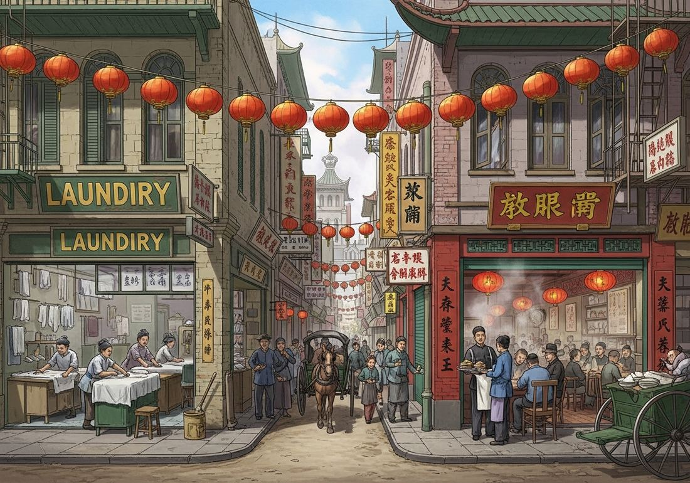

6.7 Effects of Migration in an Interconnected World from 1750 to 1900
- LO-A: Ethnic enclaves and diaspora communities: Migrants clustered together in urban neighborhoods for practical reasons: shared language, food, religion, and community support. These ethnic enclaves became culturally vibrant and economically self-sustaining. Chinese communities in San Francisco and Southeast Asia, Irish communities in Boston and New York, Italian communities in Buenos Aires and New York, Indian communities in Natal and Mauritius, all preserved cultural identities while adapting to new environments. KC-5.4.III.A. Gender and migration, women left behind: Most 19th-century labor migration was predominantly male: men left to find work, leaving women to manage households, farms, and children in sending communities. The CED (KC-5.4.III.B) notes that in many sending societies women had to take on new economic and social roles when men migrated. Remittances, money sent home by migrants, could transform family economic situations, but their irregular flow created financial uncertainty for families left behind. Nativism and immigration restriction: Large-scale immigration generated backlash in receiving societies, particularly when migrants were racially or culturally different from the majority. The most explicit examples are the Chinese Exclusion Act (U.S. 1882), the first U.S. law to restrict immigration based on race and nationality, and the White Australia Policy (1901), which explicitly restricted non-European immigration. KC-5.4.III.C. Anti-immigrant sentiment combined racial prejudice with economic anxiety about job competition. Cultural and demographic transformation: Migration transformed both sending and receiving societies. Receiving societies became more diverse in language, religion, food, and cultural practice. Sending societies were transformed by remittances (which funded economic development), returnees with new skills and ideas, and the demographic impact of losing working-age adults. These changes were uneven and contested, not all communities welcomed transformation.
Try each question before revealing the answer.
1. Why might immigrants cluster together in ethnic enclaves rather than dispersing throughout a new city or country?
2. When men migrated for work, women in sending communities often had to take on new roles. Give two examples of specific new roles women might assume.
3. The United States passed the Chinese Exclusion Act in 1882, restricting Chinese immigration. What combination of factors likely drove this policy?
4. How might remittances, money sent home by migrants to their families, both help and harm sending communities?
5. Indian indentured workers who went to Trinidad, Fiji, and Natal created distinct “Indo-Caribbean,” “Indo-Fijian,” and “Indian South African” communities that still exist today. What does this tell us about how migrants maintained and adapted their cultural identities?
- Explain the effects of migration on both sending and receiving societies from 1750 to 1900
Tap a term for its definition.
-
Definition: A neighborhood or community in which members of a specific ethnic group cluster together, maintaining shared cultural practices, language, religious institutions, and economic networks. Significance: KC-5.4.III.A’s illustrative examples include Chinese communities in Southeast Asia and the Americas, and Indian communities in the Caribbean and Pacific; these communities preserved cultural identities while adapting to new environments.
-
Definition: A dispersed population that shares a common ethnic, national, or cultural identity but lives outside its homeland. Significance: The Irish diaspora, Jewish diaspora, Indian diaspora, and Chinese diaspora all developed during or were dramatically expanded by 19th-century migration; diaspora communities maintained cultural connections to homelands while adapting to new societies.
-
Definition: Money sent by migrants to their families or communities in sending societies. Significance: Remittances were often the most significant source of cash income for rural families whose male members migrated for work; they could fund education, pay debts, and drive local economic development, but their irregular flow also created financial uncertainty.
-
Definition: The political ideology that favors the interests of native-born citizens over immigrants; hostility to immigration based on racial, cultural, or economic grounds. Significance: Generated the Chinese Exclusion Act (1882) and White Australia Policy (1901); reflects the tension between labor market competition and racial prejudice in receiving societies.
-
Definition: The first U.S. federal law to restrict immigration based specifically on race and nationality, prohibiting most Chinese laborers from entering the United States. Significance: KC-5.4.III.C’s primary example of nativist immigration restriction; reflected both racial prejudice and labor market competition anxiety; remained in effect until 1943.
-
Definition: A set of Australian immigration policies (formalized 1901) that explicitly restricted non-European, especially Asian and Pacific Islander, immigration to Australia. Significance: KC-5.4.III.C’s second example of nativist restriction; reflected settler colonial anxieties about racial composition of the new Australian nation-state; remained largely in force until the 1970s.
-
Definition: The spread of cultural elements (language, religion, food, music, practices) from one culture to another through contact, migration, or trade. Significance: Migration is one of the most powerful mechanisms of cultural diffusion; 19th-century migration transformed both sending and receiving societies through the exchange of languages, religions, foods, and practices.
-
Definition: The differential effects of migration on men and women; in many 19th-century migrations, men were the primary migrants while women remained in sending communities, taking on new economic and social roles. Significance: KC-5.4.III.B specifically addresses how women in sending societies took on new economic roles when men migrated, representing a significant shift in gender relationships driven by migration.
🏘️ Ethnic Enclaves: Building Community in New Places
When migrants arrived in new societies, they rarely dispersed evenly. They clustered in neighborhoods near people from the same region, language, and cultural background, forming ethnic enclaves that became the foundation of immigrant communities. The CED lists KC-5.4.III.A as one of the key effects of migration: sending and receiving societies were transformed, and migrants often created ethnic enclaves that preserved their cultural identities in new locations.
Chinese migrants created vibrant communities in San Francisco (Chinatown, established during the Gold Rush), in cities across Southeast Asia (Singapore, Penang, Manila, Batavia), and in the Caribbean and South America. These communities maintained Chinese-language newspapers, cultural associations, temples, and commercial networks that connected them to each other and to China. They were often formally organized through huiguan (hometown associations) that provided mutual aid, mediated disputes, and represented the community to external authorities.
Indian migrants to Trinidad, Mauritius, Natal (South Africa), and Fiji created communities that maintained Hindu and Muslim religious practices, South Asian food traditions, and family structures. These communities were created primarily by indentured workers, but evolved over generations into substantial permanent communities that have shaped the national cultures of their host countries. Today, approximately 40% of Trinidad’s population is of Indian descent; Mauritius is about 70% Indo-Mauritian.
Irish communities in Boston, New York, and Chicago; Italian communities in Buenos Aires and New York; Lebanese merchants across Latin America: all followed similar patterns, creating cultural institutions, churches, newspapers, mutual aid societies, schools, that maintained ethnic identity while facilitating adaptation to new environments.

Ethnic enclaves, such as Chinese Chinatowns in San Francisco and Southeast Asia, or Indian communities in Trinidad and Fiji, preserved cultural identities and provided community support for migrants in new environments (Google Gemini, 2025), commercially licensed. Ethnic enclaves, such as Chinese Chinatowns in San Francisco and Southeast Asia, or Indian communities in Trinidad and Fiji, preserved cultural identities and provided community support for migrants in new environments (Google Gemini, 2025), commercially licensed.
♀️ Gender and Migration: Women Left Behind
19th-century labor migration was predominantly male. Most indentured workers, railroad laborers, and factory workers who migrated were men. Women in sending communities experienced migration’s effects in specific ways that the CED identifies as KC-5.4.III.B: in many sending societies, women took on new economic and social roles when men emigrated.
In southern Italy, Mexican village communities, and South Asian sending regions, the departure of adult men for wage labor meant women had to manage households, farms, and family finances largely alone. In agricultural communities, women took over plowing, planting, and harvesting, labor previously done by men. In mercantile communities, women ran family businesses. Women became the primary point of contact for local authorities, handled financial transactions, and made decisions that patriarchal culture had previously reserved for men.
This shift had complex effects. For some women, male emigration created genuine new autonomy: managing a household budget, negotiating with landlords, and making economic decisions were real expansions of agency. For others, it meant overwhelming burdens: all the previous male labor responsibilities added to existing domestic ones, without additional income until remittances arrived, if they arrived regularly at all.
Remittances, money sent home by migrant workers, could be transformative. A regular flow of cash from an Argentine meatpacking plant or an American railway could fund children’s education, pay off a family’s debts, build a better house, or provide capital for a small business. The CED notes remittances specifically as one of the effects of migration on sending communities. But remittances were also unreliable: if a worker lost his job, was injured, or simply stopped sending money, families were left without the income they had come to depend on.
🚫 Nativism and Immigration Restriction
The large-scale immigration of the 19th century generated substantial backlash in receiving societies, particularly when immigrants were racially or culturally distinct from the majority population. The CED identifies this as KC-5.4.III.C: the effects of migration in receiving societies were often contested, and states and private entities responded with regulation of immigration and conditions of labor.
In the United States, the Chinese Exclusion Act of 1882 was the most explicit example. Chinese migrants had been essential to American economic development: they built the western portion of the transcontinental railroad, worked California’s mines and farms, and staffed manufacturing industries. But as white workers in the West competed for the same jobs, racial prejudice and economic anxiety combined into a powerful political coalition. The Chinese Exclusion Act prohibited Chinese laborers from entering the United States and prevented existing Chinese residents from becoming citizens. It was the first U.S. federal law to restrict immigration by race and nationality. It remained in effect (with expansions) until 1943 and stands as one of the most explicit examples of racism in American immigration law.
In Australia, the White Australia Policy (formalized in the Immigration Restriction Act of 1901) explicitly sought to maintain Australia as a white, European nation by restricting immigration from Asia, Africa, and the Pacific. The policy used a “dictation test”, where officials could administer a language test in any European language to exclude unwanted migrants, as a technically race-neutral mechanism for racial exclusion. Like the Chinese Exclusion Act, it reflected settler colonial anxieties about racial purity and demographic control.
Anti-immigrant sentiment in the United States also targeted European groups: Irish immigrants faced “No Irish Need Apply” discrimination in the 1850s-1860s; Italian and Eastern European immigrants faced nativist restriction through the Immigration Act of 1924. The pattern was consistent: as immigration scaled up and the demographic composition of immigrant groups shifted, nativist backlash sought to use political power to restrict cultural and demographic change.
🌏 Cultural Transformation in Receiving and Sending Societies
Migration transformed both receiving and sending societies in ways that went beyond economics. In receiving societies, immigrant communities brought new languages, religions, foods, musical traditions, and cultural practices. New York in 1900 was a kaleidoscope of languages: Italian, Yiddish, Polish, Chinese, Irish Gaelic, and dozens more were spoken in different neighborhoods. Catholic churches, Jewish synagogues, Chinese Buddhist temples, and Greek Orthodox parishes all served immigrant communities in cities that had been predominantly Protestant English-speaking a generation earlier.
These cultural transformations were contested. Nativists pushed for assimilation, the erasure of immigrant cultural differences in favor of majority culture. Immigrants pushed back: maintaining cultural identity was not just sentimental but practical, as it provided community support networks essential for economic survival. The result was an ongoing negotiation between preservation and adaptation that produced the hybrid cultures characteristic of immigrant societies.
In sending societies, returnees, migrants who came back after years abroad, brought new ideas, skills, and capital. Japanese Americans who returned from California brought new agricultural techniques. Lebanese migrants returned from South America with savings that funded local businesses. Indian workers who returned from Natal or Trinidad sometimes brought legal and political knowledge acquired abroad. Gandhi’s return to India in 1915, shaped by his South African experience, transformed Indian nationalist politics.
These videos will help you review Effects of Migration in an Interconnected World from 1750 to 1900 and solidify key concepts before your exam.
- The formation of ethnic enclaves that preserved cultural identity in new locations through community institutions
- Nativism, as Chinese immigrants established exclusive organizations to resist integration into Singaporean society
- Return migration, as Chinese organizations in Singapore maintained connections that facilitated eventual return to China
- Gender transformation, as women took on new leadership roles in Chinese community organizations
- The U.S. government’s effort to manage immigration fairly and ensure balanced labor market competition
- The effects of chain migration, as Chinese community organizations lobbied for their own exclusion
- Nativist immigration restriction driven by racial prejudice and economic anxiety in the receiving society (KC-5.4.III.C)
- An early example of international cooperation to regulate labor migration between the U.S. and China
- Migration led to urbanization in sending societies as women left farming for industrial work
- Migration resulted in nativist backlash against Italian communities in Argentina
- Return migration from Argentina brought new agricultural techniques back to Italian villages
- Women in sending societies took on new economic and social roles when men emigrated (KC-5.4.III.B)
- Indentured workers in Trinidad assimilated fully into Caribbean culture, abandoning their South Asian heritage within one generation
- Diaspora communities created by migration preserved cultural identities in new societies across multiple generations
- The White Australia Policy prevented Indian immigration from reaching the Caribbean
- Religious conversion to Christianity among Indian indentured workers transformed South Asian cultural practices in Trinidad
- Migration generated economic opportunity that allowed immigrant communities to dominate receiving societies
- Nativist restrictions in South Africa prevented Indian political organization
- Diaspora communities in receiving societies became sites of political and cultural development that had consequences far beyond the receiving society
- Return migration brought Gandhi back to India immediately after his arrival in South Africa
Answer parts A, B, and C. Each requires a separate short response. Do not write a full essay.
Part A
Briefly describe ONE way migration transformed a receiving society in the period 1750–1900, using a specific ethnic enclave or diaspora community as your example.
Part B
Briefly explain ONE way migration affected the lives of women in a sending society in the period 1750–1900.
Part C
Briefly explain how the Chinese Exclusion Act (1882) or the White Australia Policy (1901) reflected the effects of immigration on receiving societies (KC-5.4.III.C).
Write a full essay with a thesis, contextualization, evidence, and historical reasoning. Use comparison as your primary skill. A strong response will evaluate both receiving and sending society effects with specific evidence and argue a qualified claim about their relative balance.